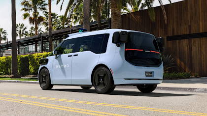

第6世代Waymo Driverのご紹介
サブタイトル： コスト最適化、より厳しい気象条件への対応、そしてこれまで以上に速いライダーへの展開
公開日： 2024年8月19日 著者： Satish Jeyachandran（エンジニアリング担当VP）

Waymoがハードウェアとソフトウェアを統合的に設計するアプローチは、会社の発展において不可欠であることが証明されています。第6世代システムの発表においてもその成果は継続しており、新世代はコストを大幅に削減しながら解像度、検知範囲、計算能力を向上させています。リーダーシップによると、次世代システムはビジネスにとって意義ある大きな前進を示しています。
第6世代システムは、米国の人口密集した都市部でのサービス展開を可能にし、運行エリアにおける交通安全を改善してきた実績ある第5世代技術をさらに発展させています。センサー構成には13台のカメラ、4台のLiDAR、6台のレーダーシステム、および外部オーディオレシーバー（EAR）が含まれます。このシステムは全方向500メートルにわたる重複したカバレッジを提供し、昼夜を問わず様々な天候パターンを通じて継続的に機能します。
大幅なコスト削減と新たな能力の実現

カメラ、LiDAR、レーダー技術で構成されるセンサーエコシステムは連携して動作し、Waymo Driverに補完的で重複した周囲環境の知覚を提供します。
自律走行システムには、安全に重要なバックアップ機能を維持し、予期しない気象イベントに対応するための組み込み冗長性が必要です。Waymo Driverは3つの異なるセンシングアプローチを通じて包括的な周囲認識を維持します。強化されたカメラ・レーダー能力と改善されたLiDARシステムの組み合わせにより、多様な道路シナリオと条件でのナビゲーションが可能になります。
技術の進歩と慎重なセンサー配置により、安全に重要な冗長性を維持しながらセンサー数を削減することに成功しました。この戦略は安全性を重視しながらシステムの最適化を可能にします。このアーキテクチャはまた、寒冷地でのクリーニングプロトコルの強化など、特定の地理的条件に合わせたセンサーコンポーネントの調整も可能にします。
さらに厳しい条件での運用
既存のシステムは、極度の熱さ、霧、降水、雹を経験する都市でも信頼性の高いサービスを提供しています。系統的なテスト遠征を通じて、組織は冬季の気象の影響に対する理解を深め、この知見を第6世代の設計に組み込みました。例えば、車両が人間の監視なしに長時間の環境露出にさらされることを考慮し、チームはバグのある地形や凍結条件での視界を維持するために各センサーに保護措置を実装しました。

より多くのライダーへ、より速く展開
6世代にわたるハードウェア製造と数千台の車両への統合を経て、組織は商業規模での完全自律走行技術の展開において多大な専門知識を蓄積しています。安全で効率的なフリート統合には、構造化テスト、実世界運用、計算シミュレーションを包含するコンポーネントおよびシステムレベルの評価による包括的な検証が必要です。
第6世代センサーアレイは、数千マイルの実際の走行と、シミュレーションでの数百万マイルを積み重ねています。Waymo Driverはすべてのハードウェア世代にわたるフリート全体の集合学習から恩恵を受けています。この分散型の知識により、自律ナビゲーションを支えるファウンデーションモデルのトレーニングに必要なマイル数が大幅に削減され、各世代の開発タイムラインが加速されます。安全重視の方法論により、シミュレーション結果は人間ドライバーなしでの運用準備が標準的な期間の約半分で達成できることを示唆しています。
第6世代ハードウェアはすでにテストフェーズとして公道に登場しています。展開準備が進む中、開発全体を通じてソーシャルプラットフォームで最新情報が共有されます。現在のWaymo技術を体験したい方は、今日Waymo Oneアプリからご利用いただけます。